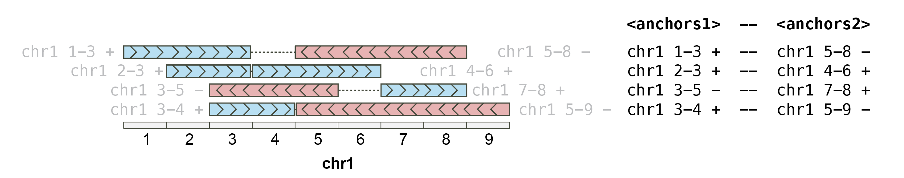
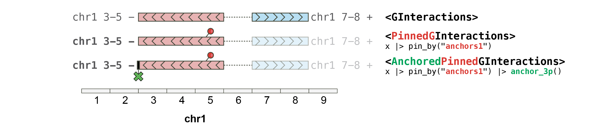
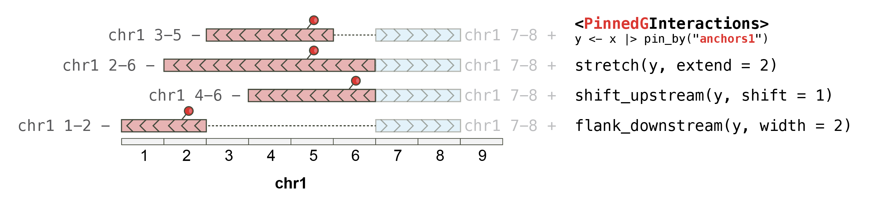
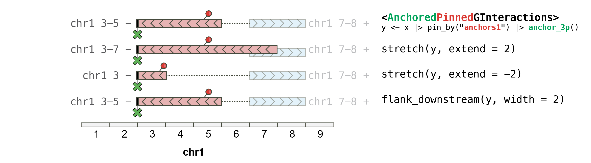

The plyinteractions
package introduces tidy methods for the GInteractions class
defined in the InteractionSet
package (Lun, Perry, and Ing-Simmons, 2016).
GInteractions are objects describing interactions
between two parallel sets of genomic ranges.
library(GenomicRanges)
library(InteractionSet)
anchor1 <- GRanges("chr1:10-20:+")
anchor2 <- GRanges("chr1:50-60:-")
gi <- GInteractions(anchor1, anchor2)
gi
#> GInteractions object with 1 interaction and 0 metadata columns:
#> seqnames1 ranges1 strand1 seqnames2 ranges2 strand2
#> <Rle> <IRanges> <Rle> <Rle> <IRanges> <Rle>
#> [1] chr1 10-20 + --- chr1 50-60 -
#> -------
#> regions: 2 ranges and 0 metadata columns
#> seqinfo: 1 sequence from an unspecified genome; no seqlengthsImporting genomic interactions in R
plyinteractions
provides a consistent interface for importing genomic interactions from
pairs and bedpe files into GInteractions in R,
following grammar of tidy data manipulation defined in the tidyverse
ecosystem.
From bed-like text files
Tidy genomic data maniuplation implies that we first parse genomic files stored on disk as tabular data frames.
bedpe_file <- system.file("tests", "test.bedpe", package = "rtracklayer")
bedpe_df <- read.delim(bedpe_file, header = FALSE, sep = '\t')
bedpe_df
#> V1 V2 V3 V4 V5 V6 V7
#> 1 chr7 118965072 118965122 chr7 118970079 118970129 TUPAC_0001:3:1:0:1452#0
#> 2 chr11 46765606 46765656 chr10 46769934 46769984 TUPAC_0001:3:1:0:1472#0
#> 3 chr20 54704674 54704724 chr20 54708987 54709037 TUPAC_0001:3:1:1:1833#0
#> V8 V9 V10
#> 1 37 + -
#> 2 37 + -
#> 3 37 + -Genomic interactions in tabular format are not easy to manipulate. We
can easily parse a data.frame into a
GInteractions object using the
as_ginteractions function.
library(plyinteractions)
gi <- bedpe_df |>
as_ginteractions(
seqnames1 = V1, start1 = V2, end1 = V3, strand1 = V9,
seqnames2 = V4, start2 = V5, end2 = V6, strand2 = V10,
starts.in.df.are.0based = TRUE
)
#> Warning in .merge_two_Seqinfo_objects(x, y): Each of the 2 combined objects has sequence levels not in the other:
#> - in 'x': chr11
#> - in 'y': chr10
#> Make sure to always combine/compare objects based on the same reference
#> genome (use suppressWarnings() to suppress this warning).
gi
#> GInteractions object with 3 interactions and 2 metadata columns:
#> seqnames1 ranges1 strand1 seqnames2 ranges2
#> <Rle> <IRanges> <Rle> <Rle> <IRanges>
#> [1] chr7 118965073-118965122 + --- chr7 118970080-118970129
#> [2] chr11 46765607-46765656 + --- chr10 46769935-46769984
#> [3] chr20 54704675-54704724 + --- chr20 54708988-54709037
#> strand2 | V7 V8
#> <Rle> | <character> <integer>
#> [1] - | TUPAC_0001:3:1:0:145.. 37
#> [2] - | TUPAC_0001:3:1:0:147.. 37
#> [3] - | TUPAC_0001:3:1:1:183.. 37
#> -------
#> regions: 6 ranges and 0 metadata columns
#> seqinfo: 4 sequences from an unspecified genome; no seqlengthsThe columns containing information for core fields of the future
GInteractions object (e.g. seqnames1,
strand2, …) can be specified using the
key = value (supported by quasiquotation).
From pairs files
The pairs file format has been formally defined by the
4DN consortium. Its specifications are available here.
It can be imported in R as a data.frame using
read.delim or any other tabular data import functions
(including fread or vroom for larger files),
and readily coerced into GInteractions with
as_ginteractions.
pairs_file <- system.file('extdata', 'pairs.gz', package = 'plyinteractions')
pairs_df <- read.delim(pairs_file, sep = "\t", header = FALSE, comment.char = "#")
head(pairs_df)
#> V1 V2 V3 V4 V5 V6 V7 V8 V9
#> 1 NS500150:527:HHGYNBGXF:3:21611:19085:3986 II 105 II 48548 + - 1358 1681
#> 2 NS500150:527:HHGYNBGXF:4:13604:19734:2406 II 113 II 45003 - + 1358 1658
#> 3 NS500150:527:HHGYNBGXF:2:11108:25178:11036 II 119 II 687251 - + 1358 5550
#> 4 NS500150:527:HHGYNBGXF:1:22301:8468:1586 II 160 II 26124 + - 1358 1510
#> 5 NS500150:527:HHGYNBGXF:4:23606:24037:2076 II 169 II 39052 + + 1358 1613
#> 6 NS500150:527:HHGYNBGXF:1:12110:9220:19806 II 177 II 10285 + - 1358 1416
pairs <- as_ginteractions(pairs_df,
seqnames1 = V2, start1 = V3, strand1 = V6,
seqnames2 = V4, start2 = V5, strand2 = V7,
width1 = 1, width2 = 1,
keep.extra.columns = FALSE
)
pairs
#> GInteractions object with 50000 interactions and 0 metadata columns:
#> seqnames1 ranges1 strand1 seqnames2 ranges2 strand2
#> <Rle> <IRanges> <Rle> <Rle> <IRanges> <Rle>
#> [1] II 105 + --- II 48548 -
#> [2] II 113 - --- II 45003 +
#> [3] II 119 - --- II 687251 +
#> [4] II 160 + --- II 26124 -
#> [5] II 169 + --- II 39052 +
#> ... ... ... ... ... ... ... ...
#> [49996] II 86996 + --- II 487591 +
#> [49997] II 86997 + --- II 96353 -
#> [49998] II 86997 + --- II 114748 -
#> [49999] II 86998 + --- II 88955 +
#> [50000] II 86999 + --- II 87513 +
#> -------
#> regions: 62911 ranges and 0 metadata columns
#> seqinfo: 1 sequence from an unspecified genome; no seqlengthsReverting from GInteractions to tabular data
frames
The reverse operation to coerce GInteractions back to a
tabular form is also possible using the as_tibble function
from the tibble package:
tibble::as_tibble(gi)
#> # A tibble: 3 × 12
#> seqnames1 start1 end1 width1 strand1 seqnames2 start2 end2 width2 strand2
#> <fct> <int> <int> <int> <fct> <fct> <int> <int> <int> <fct>
#> 1 chr7 1.19e8 1.19e8 50 + chr7 1.19e8 1.19e8 50 -
#> 2 chr11 4.68e7 4.68e7 50 + chr10 4.68e7 4.68e7 50 -
#> 3 chr20 5.47e7 5.47e7 50 + chr20 5.47e7 5.47e7 50 -
#> # ℹ 2 more variables: V7 <chr>, V8 <int>Getter functions
anchors{12}
A GInteractions object consists of two sets of
anchors: anchors1 and
anchors2.

gi <- read.table(text = "
chr1 1 10 chr1 1 15 + + cis
chr1 6 15 chr1 1 20 + + cis
chr1 6 20 chr1 6 30 - - cis
chr1 11 30 chr2 11 30 - - trans",
col.names = c(
"seqnames1", "start1", "end1",
"seqnames2", "start2", "end2", "strand1", "strand2",
"type")
) |>
as_ginteractions()
anchors(gi)
#> $first
#> GRanges object with 4 ranges and 0 metadata columns:
#> seqnames ranges strand
#> <Rle> <IRanges> <Rle>
#> [1] chr1 1-10 +
#> [2] chr1 6-15 +
#> [3] chr1 6-20 -
#> [4] chr1 11-30 -
#> -------
#> seqinfo: 2 sequences from an unspecified genome; no seqlengths
#>
#> $second
#> GRanges object with 4 ranges and 0 metadata columns:
#> seqnames ranges strand
#> <Rle> <IRanges> <Rle>
#> [1] chr1 1-15 +
#> [2] chr1 1-20 +
#> [3] chr1 6-30 -
#> [4] chr2 11-30 -
#> -------
#> seqinfo: 2 sequences from an unspecified genome; no seqlengths
anchors1(gi)
#> GRanges object with 4 ranges and 0 metadata columns:
#> seqnames ranges strand
#> <Rle> <IRanges> <Rle>
#> [1] chr1 1-10 +
#> [2] chr1 6-15 +
#> [3] chr1 6-20 -
#> [4] chr1 11-30 -
#> -------
#> seqinfo: 2 sequences from an unspecified genome; no seqlengths
anchors2(gi)
#> GRanges object with 4 ranges and 0 metadata columns:
#> seqnames ranges strand
#> <Rle> <IRanges> <Rle>
#> [1] chr1 1-15 +
#> [2] chr1 1-20 +
#> [3] chr1 6-30 -
#> [4] chr2 11-30 -
#> -------
#> seqinfo: 2 sequences from an unspecified genome; no seqlengthsImportant note: the term
anchors, when used for
GInteractions, refers to the “left-hand” or “right-hand”
GRanges when looking at genomic interactions. This is
different from the anchor term used in
plyranges. This is due to the fact that “anchor”
is used in the chromatin interaction field to refer to the ends of a
potential chromatin loop.
Core GInteractions fields
seqnames, start/end,
width and strand return informative core
fields of a GRanges object. Appending 1 or
2 to these functions allow the end-user to fetch the
corresponding fields from GInteractions objects.
Metadata columns
GInteractions contain associated metadata stored as a
DataFrame which can be recovered using the standard
mcols function:
mcols(gi)
#> DataFrame with 4 rows and 1 column
#> type
#> <character>
#> 1 cis
#> 2 cis
#> 3 cis
#> 4 transIndividual metadata columns can also be accessed using the
$ notation. Auto-completion is enabled for this method.
gi$type
#> [1] "cis" "cis" "cis" "trans"Extra genomic-related informations
regions(gi)
#> GRanges object with 8 ranges and 0 metadata columns:
#> seqnames ranges strand
#> <Rle> <IRanges> <Rle>
#> [1] chr1 1-10 +
#> [2] chr1 1-15 +
#> [3] chr1 1-20 +
#> [4] chr1 6-15 +
#> [5] chr1 6-20 -
#> [6] chr1 6-30 -
#> [7] chr1 11-30 -
#> [8] chr2 11-30 -
#> -------
#> seqinfo: 2 sequences from an unspecified genome; no seqlengths
seqinfo(gi)
#> Seqinfo object with 2 sequences from an unspecified genome; no seqlengths:
#> seqnames seqlengths isCircular genome
#> chr1 NA NA <NA>
#> chr2 NA NA <NA>Pinned (and anchored) GInteractions
The anchoring approach developed in the plyranges
package allows handy control over the way a GRanges object
is extended when using the stretch function. To enable such
workflow for GInteractions, two classes were defined:
PinnedGInteractions and
AnchoredPinnedGInteractions.

PinnedGInteractions
Pinning a GInteractions object is used to specify which
set of anchors (i.e. anchors1 or anchors2)
should be affected by plyranges functions.
gi |> pin_by("first")
#> PinnedGInteractions object with 4 interactions and 1 metadata column:
#> Pinned on: anchors1
#> seqnames1 ranges1 strand1 seqnames2 ranges2 strand2 | type
#> <Rle> <IRanges> <Rle> <Rle> <IRanges> <Rle> | <character>
#> [1] chr1 1-10 + --- chr1 1-15 + | cis
#> [2] chr1 6-15 + --- chr1 1-20 + | cis
#> [3] chr1 6-20 - --- chr1 6-30 - | cis
#> [4] chr1 11-30 - --- chr2 11-30 - | trans
#> -------
#> regions: 8 ranges and 0 metadata columns
#> seqinfo: 2 sequences from an unspecified genome; no seqlengths
pgi <- gi |> pin_by("second")
pin(pgi)
#> [1] 2
pinned_anchors(pgi)
#> GRanges object with 4 ranges and 0 metadata columns:
#> seqnames ranges strand
#> <Rle> <IRanges> <Rle>
#> [1] chr1 1-15 +
#> [2] chr1 1-20 +
#> [3] chr1 6-30 -
#> [4] chr2 11-30 -
#> -------
#> seqinfo: 2 sequences from an unspecified genome; no seqlengthsA pinned GInteractions object can be reverted back to a
unpinned GInteractions object.
unpin(pgi)
#> GInteractions object with 4 interactions and 1 metadata column:
#> seqnames1 ranges1 strand1 seqnames2 ranges2 strand2 | type
#> <Rle> <IRanges> <Rle> <Rle> <IRanges> <Rle> | <character>
#> [1] chr1 1-10 + --- chr1 1-15 + | cis
#> [2] chr1 6-15 + --- chr1 1-20 + | cis
#> [3] chr1 6-20 - --- chr1 6-30 - | cis
#> [4] chr1 11-30 - --- chr2 11-30 - | trans
#> -------
#> regions: 8 ranges and 0 metadata columns
#> seqinfo: 2 sequences from an unspecified genome; no seqlengths
AnchoredPinnedGInteractions
Some plyranges operations can work on
“anchored" GRanges. To enable
these operations either on anchors1 or
anchors2, the pinned anchors{12} of a
GInteractions object can be further”anchored”.
gi |> pin_by("first") |> anchor_5p()
#> AnchoredPinnedGInteractions object with 4 interactions and 1 metadata column:
#> Pinned on: anchors1 | Anchored by: 5p
#> seqnames1 ranges1 strand1 seqnames2 ranges2 strand2 | type
#> <Rle> <IRanges> <Rle> <Rle> <IRanges> <Rle> | <character>
#> [1] chr1 1-10 + --- chr1 1-15 + | cis
#> [2] chr1 6-15 + --- chr1 1-20 + | cis
#> [3] chr1 6-20 - --- chr1 6-30 - | cis
#> [4] chr1 11-30 - --- chr2 11-30 - | trans
#> -------
#> regions: 8 ranges and 0 metadata columns
#> seqinfo: 2 sequences from an unspecified genome; no seqlengths
plyranges operations on GInteractions
plyranges arithmetic functions are available for
(Anchored)PinnedGInteractions objects.
Important note 1: GInteractions must be
pinned to a specific anchor set (anchors1 or
anchors2) for plyranges functions to work.
Please use pin_by() function to pin
GInteractions.
Important note 2: the stretch function
will behave on PinnedGInteractions and
AnchoredPinnedGInteractions objects similarly to
GRanges or AnchoredGRanges objects.
On PinnedGInteractions objects
plyinteractions
extends the use of verbs developed in plyranges to
manipulate GRanges objects, to ensure they work on
GInteractions. The GInteractions
must be “pinned” (using pin_by()) in order
to specify which set of anchors should be affected by
plyranges functions.

gi
#> GInteractions object with 4 interactions and 1 metadata column:
#> seqnames1 ranges1 strand1 seqnames2 ranges2 strand2 | type
#> <Rle> <IRanges> <Rle> <Rle> <IRanges> <Rle> | <character>
#> [1] chr1 1-10 + --- chr1 1-15 + | cis
#> [2] chr1 6-15 + --- chr1 1-20 + | cis
#> [3] chr1 6-20 - --- chr1 6-30 - | cis
#> [4] chr1 11-30 - --- chr2 11-30 - | trans
#> -------
#> regions: 8 ranges and 0 metadata columns
#> seqinfo: 2 sequences from an unspecified genome; no seqlengths
gi |> pin_by("first") |> stretch(10)
#> PinnedGInteractions object with 4 interactions and 1 metadata column:
#> Pinned on: anchors1
#> seqnames1 ranges1 strand1 seqnames2 ranges2 strand2 | type
#> <Rle> <IRanges> <Rle> <Rle> <IRanges> <Rle> | <character>
#> [1] chr1 -4-15 + --- chr1 1-15 + | cis
#> [2] chr1 1-20 + --- chr1 1-20 + | cis
#> [3] chr1 1-25 - --- chr1 6-30 - | cis
#> [4] chr1 6-35 - --- chr2 11-30 - | trans
#> -------
#> regions: 7 ranges and 0 metadata columns
#> seqinfo: 2 sequences from an unspecified genome; no seqlengths
gi |> pin_by("first") |> shift_right(20)
#> PinnedGInteractions object with 4 interactions and 1 metadata column:
#> Pinned on: anchors1
#> seqnames1 ranges1 strand1 seqnames2 ranges2 strand2 | type
#> <Rle> <IRanges> <Rle> <Rle> <IRanges> <Rle> | <character>
#> [1] chr1 21-30 + --- chr1 1-15 + | cis
#> [2] chr1 26-35 + --- chr1 1-20 + | cis
#> [3] chr1 26-40 - --- chr1 6-30 - | cis
#> [4] chr1 31-50 - --- chr2 11-30 - | trans
#> -------
#> regions: 8 ranges and 0 metadata columns
#> seqinfo: 2 sequences from an unspecified genome; no seqlengths
gi |> pin_by("first") |> flank_right(20)
#> PinnedGInteractions object with 4 interactions and 1 metadata column:
#> Pinned on: anchors1
#> seqnames1 ranges1 strand1 seqnames2 ranges2 strand2 | type
#> <Rle> <IRanges> <Rle> <Rle> <IRanges> <Rle> | <character>
#> [1] chr1 11-30 + --- chr1 1-15 + | cis
#> [2] chr1 16-35 + --- chr1 1-20 + | cis
#> [3] chr1 21-40 - --- chr1 6-30 - | cis
#> [4] chr1 31-50 - --- chr2 11-30 - | trans
#> -------
#> regions: 8 ranges and 0 metadata columns
#> seqinfo: 2 sequences from an unspecified genome; no seqlengthsOn AnchoredPinnedGInteractions objects
When a pinned GInteractions is further anchored,
stretching with plyranges relies on the
anchoring:

gi |> pin_by("first") |> anchor_start() |> stretch(10)
#> PinnedGInteractions object with 4 interactions and 1 metadata column:
#> Pinned on: anchors1
#> seqnames1 ranges1 strand1 seqnames2 ranges2 strand2 | type
#> <Rle> <IRanges> <Rle> <Rle> <IRanges> <Rle> | <character>
#> [1] chr1 1-20 + --- chr1 1-15 + | cis
#> [2] chr1 6-25 + --- chr1 1-20 + | cis
#> [3] chr1 6-30 - --- chr1 6-30 - | cis
#> [4] chr1 11-40 - --- chr2 11-30 - | trans
#> -------
#> regions: 6 ranges and 0 metadata columns
#> seqinfo: 2 sequences from an unspecified genome; no seqlengths
gi |> pin_by("first") |> anchor_center() |> stretch(10)
#> PinnedGInteractions object with 4 interactions and 1 metadata column:
#> Pinned on: anchors1
#> seqnames1 ranges1 strand1 seqnames2 ranges2 strand2 | type
#> <Rle> <IRanges> <Rle> <Rle> <IRanges> <Rle> | <character>
#> [1] chr1 -4-15 + --- chr1 1-15 + | cis
#> [2] chr1 1-20 + --- chr1 1-20 + | cis
#> [3] chr1 1-25 - --- chr1 6-30 - | cis
#> [4] chr1 6-35 - --- chr2 11-30 - | trans
#> -------
#> regions: 7 ranges and 0 metadata columns
#> seqinfo: 2 sequences from an unspecified genome; no seqlengths
dplyr operations on GInteractions
plyinteractions
provides a set of verbs for developing analysis pipelines based on
GInteractions objects that represent genomic interactions.
The verbs extend dplyr functionalities to operate on a
GInteractions object as if it were a tabular data
object.
Mutating columns
mutate supports accessing other existing columns:
gi |> mutate(cis = seqnames1 == seqnames2)
#> GInteractions object with 4 interactions and 2 metadata columns:
#> seqnames1 ranges1 strand1 seqnames2 ranges2 strand2 | type
#> <Rle> <IRanges> <Rle> <Rle> <IRanges> <Rle> | <character>
#> [1] chr1 1-10 + --- chr1 1-15 + | cis
#> [2] chr1 6-15 + --- chr1 1-20 + | cis
#> [3] chr1 6-20 - --- chr1 6-30 - | cis
#> [4] chr1 11-30 - --- chr2 11-30 - | trans
#> cis
#> <Rle>
#> [1] TRUE
#> [2] TRUE
#> [3] TRUE
#> [4] FALSE
#> -------
#> regions: 8 ranges and 0 metadata columns
#> seqinfo: 2 sequences from an unspecified genome; no seqlengths
gi |> mutate(both_chr = paste(seqnames1, seqnames2, sep = "_"))
#> GInteractions object with 4 interactions and 2 metadata columns:
#> seqnames1 ranges1 strand1 seqnames2 ranges2 strand2 | type
#> <Rle> <IRanges> <Rle> <Rle> <IRanges> <Rle> | <character>
#> [1] chr1 1-10 + --- chr1 1-15 + | cis
#> [2] chr1 6-15 + --- chr1 1-20 + | cis
#> [3] chr1 6-20 - --- chr1 6-30 - | cis
#> [4] chr1 11-30 - --- chr2 11-30 - | trans
#> both_chr
#> <Rle>
#> [1] chr1_chr1
#> [2] chr1_chr1
#> [3] chr1_chr1
#> [4] chr1_chr2
#> -------
#> regions: 8 ranges and 0 metadata columns
#> seqinfo: 2 sequences from an unspecified genome; no seqlengths
gi |> mutate(start1 = 1)
#> GInteractions object with 4 interactions and 1 metadata column:
#> seqnames1 ranges1 strand1 seqnames2 ranges2 strand2 | type
#> <Rle> <IRanges> <Rle> <Rle> <IRanges> <Rle> | <character>
#> [1] chr1 1-10 + --- chr1 1-15 + | cis
#> [2] chr1 1-15 + --- chr1 1-20 + | cis
#> [3] chr1 1-20 - --- chr1 6-30 - | cis
#> [4] chr1 1-30 - --- chr2 11-30 - | trans
#> -------
#> regions: 7 ranges and 0 metadata columns
#> seqinfo: 2 sequences from an unspecified genome; no seqlengthsGrouping columns
group_by supports accessing both core and metadata
columns:
gi |> group_by(seqnames2)
#> GroupedGInteractions object with 4 interactions and 1 metadata column:
#> Groups: seqnames2 [2]
#> seqnames1 ranges1 strand1 seqnames2 ranges2 strand2 | type
#> <Rle> <IRanges> <Rle> <Rle> <IRanges> <Rle> | <character>
#> [1] chr1 1-10 + --- chr1 1-15 + | cis
#> [2] chr1 6-15 + --- chr1 1-20 + | cis
#> [3] chr1 6-20 - --- chr1 6-30 - | cis
#> [4] chr1 11-30 - --- chr2 11-30 - | trans
#> -------
#> regions: 8 ranges and 0 metadata columns
#> seqinfo: 2 sequences from an unspecified genome; no seqlengths
gi |> group_by(cis = seqnames1 == seqnames2)
#> GroupedGInteractions object with 4 interactions and 2 metadata columns:
#> Groups: cis [2]
#> seqnames1 ranges1 strand1 seqnames2 ranges2 strand2 | type
#> <Rle> <IRanges> <Rle> <Rle> <IRanges> <Rle> | <character>
#> [1] chr1 1-10 + --- chr1 1-15 + | cis
#> [2] chr1 6-15 + --- chr1 1-20 + | cis
#> [3] chr1 6-20 - --- chr1 6-30 - | cis
#> [4] chr1 11-30 - --- chr2 11-30 - | trans
#> cis
#> <Rle>
#> [1] TRUE
#> [2] TRUE
#> [3] TRUE
#> [4] FALSE
#> -------
#> regions: 8 ranges and 0 metadata columns
#> seqinfo: 2 sequences from an unspecified genome; no seqlengths
gi |> group_by(seqnames2, cis = seqnames1 == seqnames2)
#> GroupedGInteractions object with 4 interactions and 2 metadata columns:
#> Groups: seqnames2, cis [2]
#> seqnames1 ranges1 strand1 seqnames2 ranges2 strand2 | type
#> <Rle> <IRanges> <Rle> <Rle> <IRanges> <Rle> | <character>
#> [1] chr1 1-10 + --- chr1 1-15 + | cis
#> [2] chr1 6-15 + --- chr1 1-20 + | cis
#> [3] chr1 6-20 - --- chr1 6-30 - | cis
#> [4] chr1 11-30 - --- chr2 11-30 - | trans
#> cis
#> <Rle>
#> [1] TRUE
#> [2] TRUE
#> [3] TRUE
#> [4] FALSE
#> -------
#> regions: 8 ranges and 0 metadata columns
#> seqinfo: 2 sequences from an unspecified genome; no seqlengthsSummarizing columns
Summarizing grouped GInteractions can be extremely
powerful.
pairs |> count(strand1, strand2)
#> DataFrame with 4 rows and 3 columns
#> strand1 strand2 n
#> <Rle> <Rle> <integer>
#> 1 + + 14046
#> 2 + - 10823
#> 3 - + 10288
#> 4 - - 14843
pairs |> group_by(same_strand = strand1 == strand2) |> tally()
#> DataFrame with 2 rows and 2 columns
#> same_strand n
#> <Rle> <integer>
#> 1 FALSE 21111
#> 2 TRUE 28889
pairs |> group_by(same_strand = strand1 == strand2) |>
summarize(
neg_strand = sum(strand1 == "-"),
pos_strand = sum(strand1 == "+")
)
#> DataFrame with 2 rows and 3 columns
#> same_strand neg_strand pos_strand
#> <Rle> <integer> <integer>
#> 1 FALSE 10288 10823
#> 2 TRUE 14843 14046Filtering columns
filter supports logical expressions:
gi |> filter(seqnames1 == 'chr11')
#> GInteractions object with 0 interactions and 1 metadata column:
#> seqnames1 ranges1 strand1 seqnames2 ranges2 strand2 | type
#> <Rle> <IRanges> <Rle> <Rle> <IRanges> <Rle> | <character>
#> -------
#> regions: 8 ranges and 0 metadata columns
#> seqinfo: 2 sequences from an unspecified genome; no seqlengths
gi |> filter(start1 >= 1e8)
#> GInteractions object with 0 interactions and 1 metadata column:
#> seqnames1 ranges1 strand1 seqnames2 ranges2 strand2 | type
#> <Rle> <IRanges> <Rle> <Rle> <IRanges> <Rle> | <character>
#> -------
#> regions: 8 ranges and 0 metadata columns
#> seqinfo: 2 sequences from an unspecified genome; no seqlengths
gi |> filter(seqnames1 == seqnames2)
#> GInteractions object with 3 interactions and 1 metadata column:
#> seqnames1 ranges1 strand1 seqnames2 ranges2 strand2 | type
#> <Rle> <IRanges> <Rle> <Rle> <IRanges> <Rle> | <character>
#> [1] chr1 1-10 + --- chr1 1-15 + | cis
#> [2] chr1 6-15 + --- chr1 1-20 + | cis
#> [3] chr1 6-20 - --- chr1 6-30 - | cis
#> -------
#> regions: 8 ranges and 0 metadata columns
#> seqinfo: 2 sequences from an unspecified genome; no seqlengthsSelecting columns
select supports <tidy-select>
arguments:
gi |> select(type)
#> GInteractions object with 4 interactions and 1 metadata column:
#> seqnames1 ranges1 strand1 seqnames2 ranges2 strand2 | type
#> <Rle> <IRanges> <Rle> <Rle> <IRanges> <Rle> | <character>
#> [1] chr1 1-10 + --- chr1 1-15 + | cis
#> [2] chr1 6-15 + --- chr1 1-20 + | cis
#> [3] chr1 6-20 - --- chr1 6-30 - | cis
#> [4] chr1 11-30 - --- chr2 11-30 - | trans
#> -------
#> regions: 8 ranges and 0 metadata columns
#> seqinfo: 2 sequences from an unspecified genome; no seqlengths
gi |> select(contains("typ"))
#> GInteractions object with 4 interactions and 1 metadata column:
#> seqnames1 ranges1 strand1 seqnames2 ranges2 strand2 | type
#> <Rle> <IRanges> <Rle> <Rle> <IRanges> <Rle> | <character>
#> [1] chr1 1-10 + --- chr1 1-15 + | cis
#> [2] chr1 6-15 + --- chr1 1-20 + | cis
#> [3] chr1 6-20 - --- chr1 6-30 - | cis
#> [4] chr1 11-30 - --- chr2 11-30 - | trans
#> -------
#> regions: 8 ranges and 0 metadata columns
#> seqinfo: 2 sequences from an unspecified genome; no seqlengths
gi |> select(starts_with("ty"))
#> GInteractions object with 4 interactions and 1 metadata column:
#> seqnames1 ranges1 strand1 seqnames2 ranges2 strand2 | type
#> <Rle> <IRanges> <Rle> <Rle> <IRanges> <Rle> | <character>
#> [1] chr1 1-10 + --- chr1 1-15 + | cis
#> [2] chr1 6-15 + --- chr1 1-20 + | cis
#> [3] chr1 6-20 - --- chr1 6-30 - | cis
#> [4] chr1 11-30 - --- chr2 11-30 - | trans
#> -------
#> regions: 8 ranges and 0 metadata columns
#> seqinfo: 2 sequences from an unspecified genome; no seqlengthsNote that core fields (e.g. seqnames1,
strand2, …) cannot be retrieved using this approach, only
metadata columns are parsed. Selecting a subset of core fields from a
GInteractions would lead to loss of required information
(the other non-selected core fields).
## This does not restrict to `seqnames1` and `seqnames2` columns.
gi |> select(starts_with('seq'))
#> GInteractions object with 4 interactions and 0 metadata columns:
#> seqnames1 ranges1 strand1 seqnames2 ranges2 strand2
#> <Rle> <IRanges> <Rle> <Rle> <IRanges> <Rle>
#> [1] chr1 1-10 + --- chr1 1-15 +
#> [2] chr1 6-15 + --- chr1 1-20 +
#> [3] chr1 6-20 - --- chr1 6-30 -
#> [4] chr1 11-30 - --- chr2 11-30 -
#> -------
#> regions: 8 ranges and 0 metadata columns
#> seqinfo: 2 sequences from an unspecified genome; no seqlengthsForcing selection of core fields is still possible when using the
.drop_ranges argument of select(). This
results in the coercion of the selected columns into a
DataFrame.
## This selects `seqnames1` and `seqnames2` columns but converts the output
## into a `DataFrame`.
gi |> select(starts_with('seq'), .drop_ranges = TRUE)
#> DataFrame with 4 rows and 2 columns
#> seqnames1 seqnames2
#> <Rle> <Rle>
#> 1 chr1 chr1
#> 2 chr1 chr1
#> 3 chr1 chr1
#> 4 chr1 chr2Slicing rows
gi |> slice(1, 2)
#> GInteractions object with 2 interactions and 1 metadata column:
#> seqnames1 ranges1 strand1 seqnames2 ranges2 strand2 | type
#> <Rle> <IRanges> <Rle> <Rle> <IRanges> <Rle> | <character>
#> [1] chr1 1-10 + --- chr1 1-15 + | cis
#> [2] chr1 6-15 + --- chr1 1-20 + | cis
#> -------
#> regions: 8 ranges and 0 metadata columns
#> seqinfo: 2 sequences from an unspecified genome; no seqlengths
gi |> slice(-3)
#> GInteractions object with 3 interactions and 1 metadata column:
#> seqnames1 ranges1 strand1 seqnames2 ranges2 strand2 | type
#> <Rle> <IRanges> <Rle> <Rle> <IRanges> <Rle> | <character>
#> [1] chr1 1-10 + --- chr1 1-15 + | cis
#> [2] chr1 6-15 + --- chr1 1-20 + | cis
#> [3] chr1 11-30 - --- chr2 11-30 - | trans
#> -------
#> regions: 8 ranges and 0 metadata columns
#> seqinfo: 2 sequences from an unspecified genome; no seqlengthsOverlapping operations on GInteractions
Several operlapping functions defined in plyranges are
available for GInteractions:
-
find_overlaps; -
count_overlaps; -
filter_by_overlapsandfilter_by_non_overlaps; -
join_overlap_left.
All these functions can take a GInteractions query and a
GRanges subject to perform overlapping operations, and
maxgap and minoverlap arguments are available
to refine the query.
These functions are unstranded by default.
find_overlaps, count_overlaps and
join_overlap_left functions have *_directed
counterparts for when strandness is required.
Overlapping GInteractions
gr <- GRanges(c("chr1:25-30:-", "chr2:16-20:+"))
gi$id <- seq_len(length(gi))
gr$id <- seq_len(length(gr))
find_overlaps(gi, gr)
#> GInteractions object with 3 interactions and 3 metadata columns:
#> seqnames1 ranges1 strand1 seqnames2 ranges2 strand2 | type
#> <Rle> <IRanges> <Rle> <Rle> <IRanges> <Rle> | <character>
#> [1] chr1 6-20 - --- chr1 6-30 - | cis
#> [2] chr1 11-30 - --- chr2 11-30 - | trans
#> [3] chr1 11-30 - --- chr2 11-30 - | trans
#> id.x id.y
#> <integer> <integer>
#> [1] 3 1
#> [2] 4 1
#> [3] 4 2
#> -------
#> regions: 8 ranges and 0 metadata columns
#> seqinfo: 2 sequences from an unspecified genome; no seqlengths
find_overlaps_directed(gi, gr)
#> GInteractions object with 2 interactions and 3 metadata columns:
#> seqnames1 ranges1 strand1 seqnames2 ranges2 strand2 | type
#> <Rle> <IRanges> <Rle> <Rle> <IRanges> <Rle> | <character>
#> [1] chr1 6-20 - --- chr1 6-30 - | cis
#> [2] chr1 11-30 - --- chr2 11-30 - | trans
#> id.x id.y
#> <integer> <integer>
#> [1] 3 1
#> [2] 4 1
#> -------
#> regions: 8 ranges and 0 metadata columns
#> seqinfo: 2 sequences from an unspecified genome; no seqlengths
count_overlaps(gi, gr)
#> [1] 0 0 1 2
count_overlaps_directed(gi, gr)
#> [1] 0 0 1 1
filter_by_overlaps(gi, gr)
#> GInteractions object with 2 interactions and 2 metadata columns:
#> seqnames1 ranges1 strand1 seqnames2 ranges2 strand2 | type
#> <Rle> <IRanges> <Rle> <Rle> <IRanges> <Rle> | <character>
#> [1] chr1 6-20 - --- chr1 6-30 - | cis
#> [2] chr1 11-30 - --- chr2 11-30 - | trans
#> id
#> <integer>
#> [1] 3
#> [2] 4
#> -------
#> regions: 8 ranges and 0 metadata columns
#> seqinfo: 2 sequences from an unspecified genome; no seqlengths
filter_by_non_overlaps(gi, gr)
#> GInteractions object with 2 interactions and 2 metadata columns:
#> seqnames1 ranges1 strand1 seqnames2 ranges2 strand2 | type
#> <Rle> <IRanges> <Rle> <Rle> <IRanges> <Rle> | <character>
#> [1] chr1 1-10 + --- chr1 1-15 + | cis
#> [2] chr1 6-15 + --- chr1 1-20 + | cis
#> id
#> <integer>
#> [1] 1
#> [2] 2
#> -------
#> regions: 8 ranges and 0 metadata columns
#> seqinfo: 2 sequences from an unspecified genome; no seqlengths
join_overlap_left(gi, gr)
#> GInteractions object with 5 interactions and 3 metadata columns:
#> seqnames1 ranges1 strand1 seqnames2 ranges2 strand2 | type
#> <Rle> <IRanges> <Rle> <Rle> <IRanges> <Rle> | <character>
#> [1] chr1 1-10 + --- chr1 1-15 + | cis
#> [2] chr1 6-15 + --- chr1 1-20 + | cis
#> [3] chr1 6-20 - --- chr1 6-30 - | cis
#> [4] chr1 11-30 - --- chr2 11-30 - | trans
#> [5] chr1 11-30 - --- chr2 11-30 - | trans
#> id.x id.y
#> <integer> <integer>
#> [1] 1 <NA>
#> [2] 2 <NA>
#> [3] 3 1
#> [4] 4 1
#> [5] 4 2
#> -------
#> regions: 8 ranges and 0 metadata columns
#> seqinfo: 2 sequences from an unspecified genome; no seqlengths
join_overlap_left_directed(gi, gr)
#> GInteractions object with 4 interactions and 3 metadata columns:
#> seqnames1 ranges1 strand1 seqnames2 ranges2 strand2 | type
#> <Rle> <IRanges> <Rle> <Rle> <IRanges> <Rle> | <character>
#> [1] chr1 1-10 + --- chr1 1-15 + | cis
#> [2] chr1 6-15 + --- chr1 1-20 + | cis
#> [3] chr1 6-20 - --- chr1 6-30 - | cis
#> [4] chr1 11-30 - --- chr2 11-30 - | trans
#> id.x id.y
#> <integer> <integer>
#> [1] 1 <NA>
#> [2] 2 <NA>
#> [3] 3 1
#> [4] 4 1
#> -------
#> regions: 8 ranges and 0 metadata columns
#> seqinfo: 2 sequences from an unspecified genome; no seqlengthsOverlapping pinned GInteractions
PinnedGInteractions can also be used in overlapping
functions. In this case, only the pinned anchors are used when computing
overlaps.
gi |> pin_by("first") |> find_overlaps(gr)
#> GInteractions object with 1 interaction and 3 metadata columns:
#> seqnames1 ranges1 strand1 seqnames2 ranges2 strand2 | type
#> <Rle> <IRanges> <Rle> <Rle> <IRanges> <Rle> | <character>
#> [1] chr1 11-30 - --- chr2 11-30 - | trans
#> id.x id.y
#> <integer> <integer>
#> [1] 4 1
#> -------
#> regions: 8 ranges and 0 metadata columns
#> seqinfo: 2 sequences from an unspecified genome; no seqlengths
gi |> pin_by("second") |> find_overlaps(gr)
#> GInteractions object with 2 interactions and 3 metadata columns:
#> seqnames1 ranges1 strand1 seqnames2 ranges2 strand2 | type
#> <Rle> <IRanges> <Rle> <Rle> <IRanges> <Rle> | <character>
#> [1] chr1 6-20 - --- chr1 6-30 - | cis
#> [2] chr1 11-30 - --- chr2 11-30 - | trans
#> id.x id.y
#> <integer> <integer>
#> [1] 3 1
#> [2] 4 2
#> -------
#> regions: 8 ranges and 0 metadata columns
#> seqinfo: 2 sequences from an unspecified genome; no seqlengths
gi |> pin_by("first") |> find_overlaps_directed(gr)
#> GInteractions object with 1 interaction and 3 metadata columns:
#> seqnames1 ranges1 strand1 seqnames2 ranges2 strand2 | type
#> <Rle> <IRanges> <Rle> <Rle> <IRanges> <Rle> | <character>
#> [1] chr1 11-30 - --- chr2 11-30 - | trans
#> id.x id.y
#> <integer> <integer>
#> [1] 4 1
#> -------
#> regions: 8 ranges and 0 metadata columns
#> seqinfo: 2 sequences from an unspecified genome; no seqlengths
gi |> pin_by("second") |> find_overlaps_directed(gr)
#> GInteractions object with 1 interaction and 3 metadata columns:
#> seqnames1 ranges1 strand1 seqnames2 ranges2 strand2 | type
#> <Rle> <IRanges> <Rle> <Rle> <IRanges> <Rle> | <character>
#> [1] chr1 6-20 - --- chr1 6-30 - | cis
#> id.x id.y
#> <integer> <integer>
#> [1] 3 1
#> -------
#> regions: 8 ranges and 0 metadata columns
#> seqinfo: 2 sequences from an unspecified genome; no seqlengths
gi |> pin_by("first") |> count_overlaps(gr)
#> [1] 0 0 0 1
gi |> pin_by("second") |> count_overlaps(gr)
#> [1] 0 0 1 1
gi |> pin_by("first") |> count_overlaps_directed(gr)
#> [1] 0 0 0 1
gi |> pin_by("second") |> count_overlaps_directed(gr)
#> [1] 0 0 1 0
gi |> pin_by("first") |> filter_by_overlaps(gr)
#> GInteractions object with 1 interaction and 2 metadata columns:
#> seqnames1 ranges1 strand1 seqnames2 ranges2 strand2 | type
#> <Rle> <IRanges> <Rle> <Rle> <IRanges> <Rle> | <character>
#> [1] chr1 11-30 - --- chr2 11-30 - | trans
#> id
#> <integer>
#> [1] 4
#> -------
#> regions: 8 ranges and 0 metadata columns
#> seqinfo: 2 sequences from an unspecified genome; no seqlengths
gi |> pin_by("second") |> filter_by_overlaps(gr)
#> GInteractions object with 2 interactions and 2 metadata columns:
#> seqnames1 ranges1 strand1 seqnames2 ranges2 strand2 | type
#> <Rle> <IRanges> <Rle> <Rle> <IRanges> <Rle> | <character>
#> [1] chr1 6-20 - --- chr1 6-30 - | cis
#> [2] chr1 11-30 - --- chr2 11-30 - | trans
#> id
#> <integer>
#> [1] 3
#> [2] 4
#> -------
#> regions: 8 ranges and 0 metadata columns
#> seqinfo: 2 sequences from an unspecified genome; no seqlengths
gi |> pin_by("first") |> filter_by_non_overlaps(gr)
#> GInteractions object with 3 interactions and 2 metadata columns:
#> seqnames1 ranges1 strand1 seqnames2 ranges2 strand2 | type
#> <Rle> <IRanges> <Rle> <Rle> <IRanges> <Rle> | <character>
#> [1] chr1 1-10 + --- chr1 1-15 + | cis
#> [2] chr1 6-15 + --- chr1 1-20 + | cis
#> [3] chr1 6-20 - --- chr1 6-30 - | cis
#> id
#> <integer>
#> [1] 1
#> [2] 2
#> [3] 3
#> -------
#> regions: 8 ranges and 0 metadata columns
#> seqinfo: 2 sequences from an unspecified genome; no seqlengths
gi |> pin_by("second") |> filter_by_non_overlaps(gr)
#> GInteractions object with 2 interactions and 2 metadata columns:
#> seqnames1 ranges1 strand1 seqnames2 ranges2 strand2 | type
#> <Rle> <IRanges> <Rle> <Rle> <IRanges> <Rle> | <character>
#> [1] chr1 1-10 + --- chr1 1-15 + | cis
#> [2] chr1 6-15 + --- chr1 1-20 + | cis
#> id
#> <integer>
#> [1] 1
#> [2] 2
#> -------
#> regions: 8 ranges and 0 metadata columns
#> seqinfo: 2 sequences from an unspecified genome; no seqlengths
gi |> pin_by("first") |> join_overlap_left(gr)
#> GInteractions object with 4 interactions and 3 metadata columns:
#> seqnames1 ranges1 strand1 seqnames2 ranges2 strand2 | type
#> <Rle> <IRanges> <Rle> <Rle> <IRanges> <Rle> | <character>
#> [1] chr1 1-10 + --- chr1 1-15 + | cis
#> [2] chr1 6-15 + --- chr1 1-20 + | cis
#> [3] chr1 6-20 - --- chr1 6-30 - | cis
#> [4] chr1 11-30 - --- chr2 11-30 - | trans
#> id.x id.y
#> <integer> <integer>
#> [1] 1 <NA>
#> [2] 2 <NA>
#> [3] 3 <NA>
#> [4] 4 1
#> -------
#> regions: 8 ranges and 0 metadata columns
#> seqinfo: 2 sequences from an unspecified genome; no seqlengths
gi |> pin_by("second") |> join_overlap_left(gr)
#> GInteractions object with 4 interactions and 3 metadata columns:
#> seqnames1 ranges1 strand1 seqnames2 ranges2 strand2 | type
#> <Rle> <IRanges> <Rle> <Rle> <IRanges> <Rle> | <character>
#> [1] chr1 1-10 + --- chr1 1-15 + | cis
#> [2] chr1 6-15 + --- chr1 1-20 + | cis
#> [3] chr1 6-20 - --- chr1 6-30 - | cis
#> [4] chr1 11-30 - --- chr2 11-30 - | trans
#> id.x id.y
#> <integer> <integer>
#> [1] 1 <NA>
#> [2] 2 <NA>
#> [3] 3 1
#> [4] 4 2
#> -------
#> regions: 8 ranges and 0 metadata columns
#> seqinfo: 2 sequences from an unspecified genome; no seqlengths
gi |> pin_by("first") |> join_overlap_left_directed(gr)
#> GInteractions object with 4 interactions and 3 metadata columns:
#> seqnames1 ranges1 strand1 seqnames2 ranges2 strand2 | type
#> <Rle> <IRanges> <Rle> <Rle> <IRanges> <Rle> | <character>
#> [1] chr1 1-10 + --- chr1 1-15 + | cis
#> [2] chr1 6-15 + --- chr1 1-20 + | cis
#> [3] chr1 6-20 - --- chr1 6-30 - | cis
#> [4] chr1 11-30 - --- chr2 11-30 - | trans
#> id.x id.y
#> <integer> <integer>
#> [1] 1 <NA>
#> [2] 2 <NA>
#> [3] 3 <NA>
#> [4] 4 1
#> -------
#> regions: 8 ranges and 0 metadata columns
#> seqinfo: 2 sequences from an unspecified genome; no seqlengths
gi |> pin_by("second") |> join_overlap_left_directed(gr)
#> GInteractions object with 4 interactions and 3 metadata columns:
#> seqnames1 ranges1 strand1 seqnames2 ranges2 strand2 | type
#> <Rle> <IRanges> <Rle> <Rle> <IRanges> <Rle> | <character>
#> [1] chr1 1-10 + --- chr1 1-15 + | cis
#> [2] chr1 6-15 + --- chr1 1-20 + | cis
#> [3] chr1 6-20 - --- chr1 6-30 - | cis
#> [4] chr1 11-30 - --- chr2 11-30 - | trans
#> id.x id.y
#> <integer> <integer>
#> [1] 1 <NA>
#> [2] 2 <NA>
#> [3] 3 1
#> [4] 4 <NA>
#> -------
#> regions: 8 ranges and 0 metadata columns
#> seqinfo: 2 sequences from an unspecified genome; no seqlengthsCiting plyinteractions
We hope that plyinteractions will be useful for your research. Please use the following information to cite the package and the overall approach. Thank you!
## Citation info
citation("plyinteractions")
#> To cite package 'plyinteractions' in publications use:
#>
#> Serizay J (2023). _plyinteractions: Extending tidy verbs to genomic
#> interactions_. R package version 0.99.0,
#> <https://github.com/js2264/plyinteractions>.
#>
#> A BibTeX entry for LaTeX users is
#>
#> @Manual{,
#> title = {plyinteractions: Extending tidy verbs to genomic interactions},
#> author = {Jacques Serizay},
#> year = {2023},
#> note = {R package version 0.99.0},
#> url = {https://github.com/js2264/plyinteractions},
#> }Acknowledgments
The plyinteractions
package introduces tidy methods for the GInteractions class
defined in the InteractionSet
package (Lun, Perry, and Ing-Simmons, 2016).
The plyinteractions package follows tidy principles defined for tabular data and genomic ranges:
- dplyr (Wickham, François, Henry, Müller, and Vaughan, 2023)
- rlang (Henry and Wickham, 2023)
- plyranges (Lee, Stuart, Cook, Dianne, Lawrence, and Michael, 2019)
The plyinteractions package (Serizay, 2023) was written using the following resources:
Supporting documentation was generated using the following resources:
- BiocStyle (Oleś, 2023)
- knitr (Xie, 2023)
- RefManageR (McLean, 2017)
- rmarkdown (Allaire, Xie, Dervieux, McPherson, Luraschi, Ushey, Atkins, Wickham, Cheng, Chang, and Iannone, 2023)
Reproducibility
R session information:
#> ─ Session info ───────────────────────────────────────────────────────────────────────────────────────────────────────
#> setting value
#> version R version 4.3.1 (2023-06-16)
#> os Ubuntu 22.04.3 LTS
#> system x86_64, linux-gnu
#> ui X11
#> language en
#> collate en_US.UTF-8
#> ctype en_US.UTF-8
#> tz UTC
#> date 2023-09-29
#> pandoc 3.1.1 @ /usr/local/bin/ (via rmarkdown)
#>
#> ─ Packages ───────────────────────────────────────────────────────────────────────────────────────────────────────────
#> package * version date (UTC) lib source
#> abind 1.4-5 2016-07-21 [1] CRAN (R 4.3.1)
#> backports 1.4.1 2021-12-13 [1] CRAN (R 4.3.1)
#> bibtex 0.5.1 2023-01-26 [1] CRAN (R 4.3.1)
#> Biobase * 2.61.0 2023-04-25 [1] Bioconductor
#> BiocGenerics * 0.47.0 2023-04-25 [1] Bioconductor
#> BiocIO 1.11.0 2023-04-25 [1] Bioconductor
#> BiocManager 1.30.22 2023-08-08 [1] CRAN (R 4.3.1)
#> BiocParallel 1.35.4 2023-08-17 [1] Bioconductor
#> BiocStyle * 2.29.2 2023-09-14 [1] Bioconductor
#> Biostrings 2.69.2 2023-07-02 [1] Bioconductor
#> bitops 1.0-7 2021-04-24 [1] CRAN (R 4.3.1)
#> bookdown 0.35 2023-08-09 [1] CRAN (R 4.3.1)
#> bslib 0.5.1 2023-08-11 [2] CRAN (R 4.3.1)
#> cachem 1.0.8 2023-05-01 [2] CRAN (R 4.3.1)
#> cli 3.6.1 2023-03-23 [2] CRAN (R 4.3.1)
#> codetools 0.2-19 2023-02-01 [3] CRAN (R 4.3.1)
#> crayon 1.5.2 2022-09-29 [2] CRAN (R 4.3.1)
#> DelayedArray 0.27.10 2023-07-28 [1] Bioconductor
#> desc 1.4.2 2022-09-08 [2] CRAN (R 4.3.1)
#> digest 0.6.33 2023-07-07 [2] CRAN (R 4.3.1)
#> dplyr 1.1.3 2023-09-03 [1] CRAN (R 4.3.1)
#> evaluate 0.22 2023-09-29 [2] CRAN (R 4.3.1)
#> fansi 1.0.4 2023-01-22 [2] CRAN (R 4.3.1)
#> fastmap 1.1.1 2023-02-24 [2] CRAN (R 4.3.1)
#> fs 1.6.3 2023-07-20 [2] CRAN (R 4.3.1)
#> generics 0.1.3 2022-07-05 [1] CRAN (R 4.3.1)
#> GenomeInfoDb * 1.37.4 2023-09-07 [1] Bioconductor
#> GenomeInfoDbData 1.2.10 2023-09-07 [1] Bioconductor
#> GenomicAlignments 1.37.0 2023-04-25 [1] Bioconductor
#> GenomicRanges * 1.53.1 2023-05-04 [1] Bioconductor
#> glue 1.6.2 2022-02-24 [2] CRAN (R 4.3.1)
#> htmltools 0.5.6 2023-08-10 [2] CRAN (R 4.3.1)
#> httr 1.4.7 2023-08-15 [2] CRAN (R 4.3.1)
#> InteractionSet * 1.29.1 2023-06-14 [1] Bioconductor
#> IRanges * 2.35.2 2023-06-22 [1] Bioconductor
#> jquerylib 0.1.4 2021-04-26 [2] CRAN (R 4.3.1)
#> jsonlite 1.8.7 2023-06-29 [2] CRAN (R 4.3.1)
#> knitr 1.44 2023-09-11 [2] CRAN (R 4.3.1)
#> lattice 0.21-8 2023-04-05 [3] CRAN (R 4.3.1)
#> lifecycle 1.0.3 2022-10-07 [2] CRAN (R 4.3.1)
#> lubridate 1.9.3 2023-09-27 [1] CRAN (R 4.3.1)
#> magrittr 2.0.3 2022-03-30 [2] CRAN (R 4.3.1)
#> Matrix 1.6-1.1 2023-09-18 [2] CRAN (R 4.3.1)
#> MatrixGenerics * 1.13.1 2023-07-25 [1] Bioconductor
#> matrixStats * 1.0.0 2023-06-02 [1] CRAN (R 4.3.1)
#> memoise 2.0.1 2021-11-26 [2] CRAN (R 4.3.1)
#> pillar 1.9.0 2023-03-22 [2] CRAN (R 4.3.1)
#> pkgconfig 2.0.3 2019-09-22 [2] CRAN (R 4.3.1)
#> pkgdown 2.0.7 2022-12-14 [1] CRAN (R 4.3.1)
#> plyinteractions * 0.99.0 2023-09-29 [1] Bioconductor
#> plyr 1.8.8 2022-11-11 [1] CRAN (R 4.3.1)
#> plyranges 1.21.0 2023-04-25 [1] Bioconductor
#> purrr 1.0.2 2023-08-10 [2] CRAN (R 4.3.1)
#> R6 2.5.1 2021-08-19 [2] CRAN (R 4.3.1)
#> ragg 1.2.5 2023-01-12 [2] CRAN (R 4.3.1)
#> Rcpp 1.0.11 2023-07-06 [2] CRAN (R 4.3.1)
#> RCurl 1.98-1.12 2023-03-27 [1] CRAN (R 4.3.1)
#> RefManageR * 1.4.0 2022-09-30 [1] CRAN (R 4.3.1)
#> restfulr 0.0.15 2022-06-16 [1] CRAN (R 4.3.1)
#> rjson 0.2.21 2022-01-09 [1] CRAN (R 4.3.1)
#> rlang 1.1.1 2023-04-28 [2] CRAN (R 4.3.1)
#> rmarkdown 2.25 2023-09-18 [1] CRAN (R 4.3.1)
#> rprojroot 2.0.3 2022-04-02 [2] CRAN (R 4.3.1)
#> Rsamtools 2.17.0 2023-04-25 [1] Bioconductor
#> rtracklayer 1.61.1 2023-08-15 [1] Bioconductor
#> S4Arrays 1.1.6 2023-08-30 [1] Bioconductor
#> S4Vectors * 0.39.2 2023-09-22 [1] Bioconductor
#> sass 0.4.7 2023-07-15 [2] CRAN (R 4.3.1)
#> sessioninfo * 1.2.2 2021-12-06 [2] CRAN (R 4.3.1)
#> SparseArray 1.1.12 2023-08-31 [1] Bioconductor
#> stringi 1.7.12 2023-01-11 [2] CRAN (R 4.3.1)
#> stringr 1.5.0 2022-12-02 [2] CRAN (R 4.3.1)
#> SummarizedExperiment * 1.31.1 2023-05-01 [1] Bioconductor
#> systemfonts 1.0.4 2022-02-11 [2] CRAN (R 4.3.1)
#> textshaping 0.3.6 2021-10-13 [2] CRAN (R 4.3.1)
#> tibble 3.2.1 2023-03-20 [2] CRAN (R 4.3.1)
#> tidyselect 1.2.0 2022-10-10 [1] CRAN (R 4.3.1)
#> timechange 0.2.0 2023-01-11 [1] CRAN (R 4.3.1)
#> utf8 1.2.3 2023-01-31 [2] CRAN (R 4.3.1)
#> vctrs 0.6.3 2023-06-14 [2] CRAN (R 4.3.1)
#> withr 2.5.1 2023-09-26 [2] CRAN (R 4.3.1)
#> xfun 0.40 2023-08-09 [2] CRAN (R 4.3.1)
#> XML 3.99-0.14 2023-03-19 [1] CRAN (R 4.3.1)
#> xml2 1.3.5 2023-07-06 [2] CRAN (R 4.3.1)
#> XVector 0.41.1 2023-05-03 [1] Bioconductor
#> yaml 2.3.7 2023-01-23 [2] CRAN (R 4.3.1)
#> zlibbioc 1.47.0 2023-04-25 [1] Bioconductor
#>
#> [1] /__w/_temp/Library
#> [2] /usr/local/lib/R/site-library
#> [3] /usr/local/lib/R/library
#>
#> ──────────────────────────────────────────────────────────────────────────────────────────────────────────────────────Bibliography
[1] J. Allaire, Y. Xie, C. Dervieux, et al. rmarkdown: Dynamic Documents for R. R package version 2.25. 2023. URL: https://github.com/rstudio/rmarkdown.
[2] L. Henry and H. Wickham. rlang: Functions for Base Types and Core R and ‘Tidyverse’ Features. R package version 1.1.1. 2023. URL: https://CRAN.R-project.org/package=rlang.
[3] Lee, Stuart, Cook, et al. “plyranges: a grammar of genomic data transformation”. In: Genome Biol. 20.1 (2019), p. 4. URL: http://dx.doi.org/10.1186/s13059-018-1597-8.
[4] A. T. L. Lun, M. Perry, and E. Ing-Simmons. “Infrastructure for genomic interactions: Bioconductor classes for Hi-C, ChIA-PET and related experiments”. In: F1000Res. 5 (2016), p. 950.
[5] M. W. McLean. “RefManageR: Import and Manage BibTeX and BibLaTeX References in R”. In: The Journal of Open Source Software (2017). DOI: 10.21105/joss.00338.
[6] A. Oleś. BiocStyle: Standard styles for vignettes and other Bioconductor documents. R package version 2.29.2. 2023. DOI: 10.18129/B9.bioc.BiocStyle. URL: https://bioconductor.org/packages/BiocStyle.
[7] R Core Team. R: A Language and Environment for Statistical Computing. R Foundation for Statistical Computing. Vienna, Austria, 2023. URL: https://www.R-project.org/.
[8] J. Serizay. plyinteractions: Extending tidy verbs to genomic interactions. R package version 0.99.0. 2023. URL: https://github.com/js2264/plyinteractions.
[9] H. Wickham, R. François, L. Henry, et al. dplyr: A Grammar of Data Manipulation. R package version 1.1.3. 2023. URL: https://CRAN.R-project.org/package=dplyr.
[10] Y. Xie. knitr: A General-Purpose Package for Dynamic Report Generation in R. R package version 1.44. 2023. URL: https://yihui.org/knitr/.